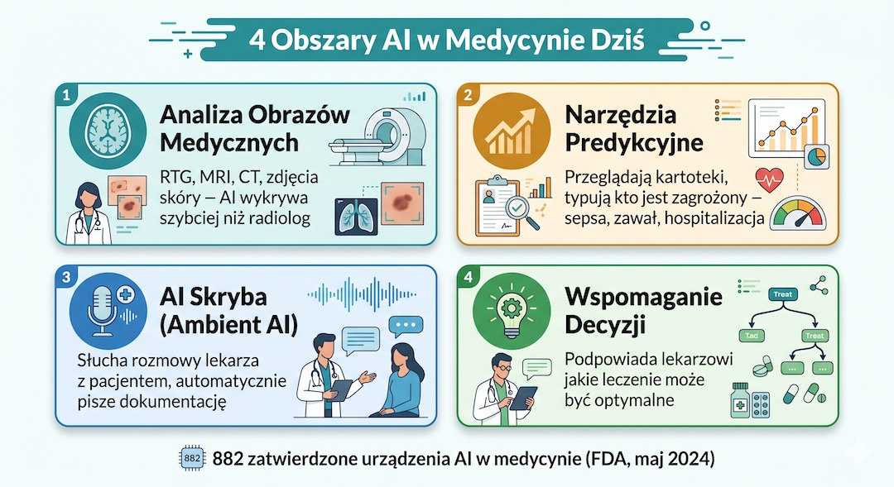
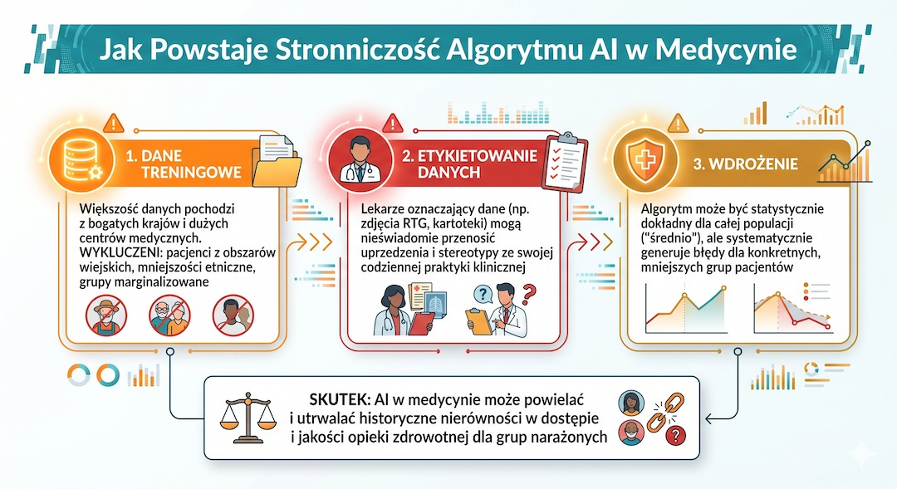

Wyobraźmy sobie wizytę u lekarza, podczas której specjalista w końcu ma czas, by patrzeć nam prosto w oczy, a nie w klawiaturę komputera. Obok nas dyskretnie działa program, który słucha rozmowy, podsumowuje ją i automatycznie przygotowuje dokumentację. To nie jest wizja z przyszłości – to rzeczywistość, która już dziś wchodzi do naszych gabinetów.
Sztuczna inteligencja (AI) pomaga dziś radiologom szybciej czytać zdjęcia rentgenowskie, przegląda tysiące kartotek, by wyłapać osoby z grupy ryzyka, i podpowiada najlepsze ścieżki leczenia. Medyczny świat jest zachwycony tempem tej rewolucji.
Jednak w najnowszym numerze prestiżowego pisma naukowego Nature Medicine (kwiecień 2026) eksperci stawiają pytanie, które powinno nas wszystkich na chwilę zatrzymać: czy te nowoczesne narzędzia faktycznie sprawiają, że my, pacjenci, zdrowiejemy lepiej? Okazuje się, że choć technologia jest imponująca, wciąż brakuje nam twardych dowodów na to, że dzięki niej żyjemy dłużej lub rzadziej trafiamy do szpitali.
Kluczowe wnioski
- AI w medycynie to nie tylko przyszłość, ale realne narzędzia używane już w 65% szpitali w USA.
- Najnowsze badania w Nature Medicine (2026) ostrzegają: wiemy, że AI jest dokładna, ale nie wiemy jeszcze, czy faktycznie poprawia wyniki leczenia pacjentów.
- Algorytmy mogą powielać ludzkie uprzedzenia, dlatego nadzór lekarza nad maszyną pozostaje kluczowy dla bezpieczeństwa.
- Jako pacjent masz prawo pytać lekarza, czy i w jaki sposób korzysta z systemów wspierania decyzji opartych na AI.
Czym właściwie jest AI w medycynie? Wyjaśniamy prosto
Warto zacząć od tego, że AI w medycynie to nie jeden superkomputer, ale cała armia wyspecjalizowanych pomocników. Ich siła polega na rozpoznawaniu wzorców. Jeśli programowi pokaże się milion zdjęć RTG, nauczy się on wyłapywać najmniejsze niepokojące zmiany znacznie szybciej niż ludzkie oko, które po wielu godzinach pracy bywa po prostu zmęczone.
Dziś w szpitalach ci „cyfrowi asystenci” pracują głównie w czterech obszarach. Po pierwsze, pomagają w analizie obrazów (RTG, tomografia). Po drugie, działają jako systemy wczesnego ostrzegania – przeszukują bazy danych, by ostrzec lekarza, że dany pacjent może wkrótce potrzebować intensywniejszej opieki. Trzeci obszar to tzw. AI skryba, czyli program piszący za lekarza notatki z rozmowy z pacjentem. Ostatni to wsparcie decyzji, czyli podpowiedzi, która terapia będzie najskuteczniejsza dla konkretnej osoby.
Z najnowszych danych wynika, że aż 65% szpitali w USA korzysta już z takich rozwiązań. W Polsce ten proces dopiero rusza, ale regulacje Unii Europejskiej oraz coraz większa liczba certyfikowanych narzędzi sprawiają, że to tylko kwestia czasu, kiedy takie systemy staną się standardem również w naszych przychodniach.

AI w liczbach: Do połowy 2024 roku amerykańska FDA zatwierdziła już 882 urządzenia medyczne oparte na AI. Ponad 75% z nich to narzędzia pomagające radiologom w opisywaniu zdjęć i skanów naszego ciała.
Źródło: University of Minnesota, 2025; FDA 2024
Głos rozsądku naukowców: entuzjazm to nie wszystko
Jenna Wiens, informatyczka z University of Michigan, przez lata przekonywała lekarzy do nowinek technologicznych. Dziś jednak, wspólnie z badaczami z Nature Medicine, bije na alarm. Dlaczego? Bo wdrożenie technologii w wielu miejscach nastąpiło szybciej niż rzetelne sprawdzenie, czy to nam pomaga.
Główny problem polega na tym, że większość badań mierzy tzw. dokładność programu (czy AI poprawnie rozpoznała chorobę), ale bardzo mało badań mierzy wynik zdrowotny. To kluczowa różnica. Nawet jeśli program bezbłędnie opisał zdjęcie RTG, musimy wiedzieć, czy ta informacja faktycznie zmieniła decyzję lekarza na lepszą i czy dzięki temu pacjent szybciej wrócił do zdrowia.
„Lubimy rzeczy, które oszczędzają czas, ale musimy myśleć o niezamierzonych konsekwencjach” – ostrzega Wiens. To ważne przypomnienie, że technologia w medycynie musi służyć człowiekowi, a nie tylko przyspieszać biurokrację.
Pamiętajmy: Wysoka dokładność algorytmu nie zawsze oznacza lepsze zdrowie pacjenta. Prawdziwy sukces medyczny to sytuacja, w której dzięki technologii czujemy się lepiej i żyjemy dłużej.
Źródło: Nature Medicine, kwiecień 2026
AI skryba: gdy lekarz odzyskuje czas dla pacjenta
Jedną z najbardziej lubianych przez lekarzy nowości są programy typu AI skryba. Dzięki nim medyk nie musi wklepywać danych do komputera podczas naszej rozmowy. Może być w pełni obecny, słuchać i obserwować pacjenta. To ogromny krok w stronę „odczłowieczenia” medycyny, którą przez lata zdominowały monitory.
Pojawiają się jednak pytania o to, jak takie ułatwienie wpływa na proces myślowy lekarza. Kiedy sami robimy notatki, głębiej przetwarzamy informacje. Czy jeśli komputer zrobi to za lekarza, nie umknie nam coś ważnego? Naukowcy podkreślają, że potrzebujemy czasu, by sprawdzić, jak te zmiany wpłyną na jakość diagnoz w dłuższej perspektywie.
Zaleta: Lekarz nie musi patrzeć w klawiaturę i może poświęcić Ci całą uwagę. Wyzwanie: Nauka musi dopiero potwierdzić, czy takie odciążenie nie osłabia czujności diagnostycznej lekarza.
Źródło: MIT Technology Review, 2026
Wyzwanie: czy algorytm może być niesprawiedliwy?
Nauka posługuje się terminem „stronniczości algorytmów”. Mówiąc po ludzku: AI uczy się na danych historycznych. Jeśli w przeszłości pewne grupy osób były gorzej leczone lub miały gorszy dostęp do badań, program może uznać te nieprawidłowości za normę i zacząć je powielać.
W USA wykryto przypadek, w którym program do typowania pacjentów do opieki systematycznie uznawał pewne grupy za „mniej chore” tylko dlatego, że historycznie wydawano na ich leczenie mniej pieniędzy. Algorytm nie kierował się złą wolą, a jedynie błędną matematyką. To dowodzi, że nad każdą decyzją komputera musi zawsze czuwać człowiek – doświadczony lekarz, który zna życie, a nie tylko liczby.

Ważny fakt: AI uczy się na tym, co było. Jeśli historia medycyny miała swoje błędy i nierówności, algorytm może je nieświadomie przejąć. Dlatego weryfikacja wyników przez lekarza jest absolutnie kluczowa.
Źródło: Nature npj Digital Medicine, 2025
Gdzie AI już dziś zdaje egzamin?
Mimo tych znaków zapytania, mamy też powody do optymizmu. Najlepiej udokumentowane sukcesy AI odnosi w kardiologii. Przegląd badań z 2025 roku pokazuje, że systemy te świetnie radzą sobie z wykrywaniem migotania przedsionków na podstawie zapisu EKG, co pozwala na szybszą interwencję i ochronę serca.
Również w radiologii AI pełni rolę „drugiej pary oczu”. Pomaga wyłapać drobne zmiany na zdjęciach RTG klatki piersiowej, które mogą umknąć człowiekowi podczas nocnego dyżuru lub pod koniec ciężkiego dnia pracy. Tutaj AI nie zastępuje specjalisty, ale działa jak czujny strażnik, który mówi: „spójrz tutaj jeszcze raz”.
Sukcesy: W badaniach z lat 2021–2024 AI istotnie poprawiła dokładność wykrywania wad serca i problemów z rytmem kardiologicznym. To obszar, w którym technologia ratuje życie już teraz.
Źródło: JACC Advances, wrzesień 2025
Co warto wiedzieć jako pacjent w erze AI?
Wkraczamy w czasy, w których wizyta u lekarza będzie wspierana przez coraz nowocześniejsze oprogramowanie. Co to oznacza dla Ciebie? Po pierwsze: AI to tylko narzędzie, a nie sędzia. Ostateczna decyzja o Twoim zdrowiu, lekach czy operacji zawsze należy do lekarza. Po drugie: masz prawo pytać. Jeśli lekarz wspomina o wynikach z analizy cyfrowej, zapytaj, co one oznaczają w Twoim konkretnym przypadku.
Pamiętajmy też, że technologia nie zna Twojej historii tak, jak Ty ją znasz. Żaden algorytm nie wie, jak się czujesz rano, co sprawia Ci radość, a co ból. Dlatego ta ludzka relacja z lekarzem, oparta na rozmowie i zaufaniu, pozostaje najważniejszym fundamentem medycyny, nawet w świecie pełnym sztucznej inteligencji.
Twoje prawo: Europejskie prawo (AI Act 2024) nakłada na medyczne systemy AI surowe wymogi przejrzystości. Systemy te muszą być pod nadzorem człowieka, a pacjent ma prawo do rzetelnej informacji o ich roli w leczeniu.
Źródło: EU AI Act, 2024
Najczęstsze pytania
Czy muszę się zgadzać na użycie AI przez mojego lekarza?
Większość narzędzi AI używanych dziś w medycynie to systemy wspomagające, które działają w tle (np. przy opisywaniu Twojego zdjęcia RTG). Są one częścią procesu diagnostycznego, podobnie jak inne nowoczesne maszyny. Jeśli jednak lekarz planuje użyć bardziej zaawansowanych systemów, masz prawo zapytać o ich certyfikację i poprosić o wyjaśnienie, w jaki sposób wpłynęły one na ostateczną diagnozę.
Czy AI może zastąpić rozmowę z lekarzem?
Zdecydowanie nie. Najlepsze efekty medyczne osiąga się wtedy, gdy AI odciąża lekarza z biurokracji, by ten miał WIĘCEJ czasu na rozmowę z pacjentem. Technologia ma służyć człowiekowi, a nie go eliminować z procesu leczenia. Twoje samopoczucie i opis objawów są dla lekarza cenniejsze niż jakikolwiek algorytm.
Czy AI w medycynie bywa omylna i co to znaczy dla pacjenta?
Tak, systemy AI mogą się mylić, zwłaszcza gdy działają na danych słabszej jakości albo na populacji innej niż ta, na której były trenowane. Dlatego AI nie może działać bez nadzoru lekarza. Dla pacjenta oznacza to jedno: warto pytać, czy wynik z AI został zweryfikowany klinicznie i jak wpłynął na końcową decyzję.
Największą szansą, jaką daje nam AI, nie jest zastąpienie lekarza, ale zwrócenie mu czasu, który będzie mógł poświęcić pacjentowi. To powrót do korzeni medycyny – rozmowy i empatii, wspartych najnowszą technologią. – Zespół redakcyjny FitPo50
Źródła
- https://www.technologyreview.com/2026/04/24/1136352/health-care-ai-dont-know-actually-helps-patients/
- https://www.nature.com/articles/s41591-026-04329-2
- https://www.sph.umn.edu/news/new-study-analyzes-hospitals-use-of-ai-assisted-predictive-tools-for-accuracy-and-biases/
- https://pubmed.ncbi.nlm.nih.gov/39695057/
- https://www.nature.com/articles/s41746-025-01503-7
- https://www.fda.gov/medical-devices/software-medical-device-samd/artificial-intelligence-and-machine-learning-enabled-medical-devices
- https://eur-lex.europa.eu/eli/reg/2024/1689/oj
Uwaga: Artykuł ma charakter informacyjny i popularnonaukowy. Nie stanowi porady medycznej. Opisane narzędzia AI są stosowane w warunkach klinicznych pod nadzorem lekarzy. Zawsze konsultuj swoje zdrowie ze specjalistą.